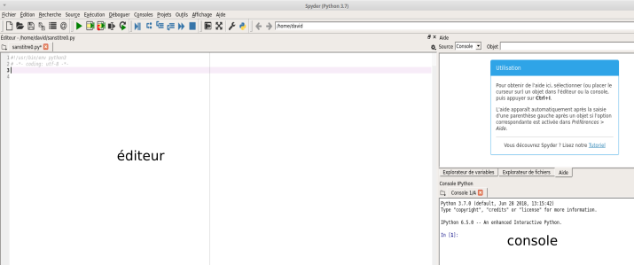

Formation Python - niveau 1
Programmer un ordinateur, c'est quoi ?
Programmer, c'est créer des programmes (suite d'instructions données à l'ordinateur) ! Un ordinateur sans programme ne sait rien faire. Il existe différents langages qui permettent de programmer un ordinateur, mais le seul directement utilisable par le processeur est le langage machine (suite de 1 et de 0). Aujourd'hui (presque) plus personne ne programme en langage machine (trop compliqué).
Les informaticiens utilisent des instructions (mots souvent en anglais) en lieu et place de la suite de 0 et de 1. Ces instructions, une fois écrites par le programmeur, sont « traduites » en langage machine. Un programme spécialisé assure cette traduction. Ce système de traduction s'appellera interpréteur ou bien compilateur, suivant la méthode utilisée pour effectuer la traduction.
Il existe 2 grandes familles de langages de programmation :
- Les langages de bas niveau sont très complexes à utiliser, car très éloignés du langage naturel, on dit que ce sont des langages « proches de la machine », en contrepartie ils permettent de faire des programmes très rapides à l'exécution. L'assembleur est le langage de bas niveau. Certains "morceaux" de programmes sont écrits en assembleur encore aujourd'hui.
- Les langages de haut niveau sont eux plus "faciles" à utiliser, car plus proches du langage naturel (exemple : si a=3 alors b=c). Exemples de langages de haut niveau : C, C++ , Java, Python...
Pour écrire nos programmes, nous utiliserons le logiciel Spyder (mais il existe beaucoup d'autres logiciels permettant de faire la même chose : IDLE, Pycharm...).
Prise en main de Spyder
Une fois Spyder lancé, vous devriez obtenir quelque chose qui ressemble à cela :
Spyder se divise en plusieurs fenêtres, deux fenêtres vont principalement nous intéresser : la fenêtre "éditeur" et la fenêtre "console".
E1
Dans la fenêtre "éditeur", saisissez le programme suivante :
print("hello world !")
Cliquez sur le "triangle vert" afin d'exécuter le programme qui vient d'être saisi.
Spyder va vous demander d'enregistrer le programme, enregistrez-le dans un dossier qui vous servira de dossier de travail
Vous devez voir le message "hello world !" apparaître dans la console
Notion de variable
Définition du mot ordinateur d'après "Le Petit Larousse" :
"Machine automatique de traitement de l'information, obéissant à des programmes formés par des suites d'opérations arithmétiques et logiques."
Qui dit "traitement de l'information", dit donc données à manipuler. Un programme "passe" donc son temps à traiter des données. Pour pouvoir traiter ces données, l'ordinateur doit les ranger dans sa mémoire (RAM - Random Access Memory). La RAM se compose de cases dans lesquelles nous allons ranger ces données (une donnée dans une case). Chaque case a une adresse (ce qui permet au processeur de savoir où sont rangées les données).
Alors, qu'est-ce qu'une variable ?
Eh bien, c'est une petite information (une donnée) temporaire que l'on stocke dans une case de la RAM. On dit qu'elle est "variable", car c'est une valeur qui peut changer pendant le déroulement du programme.
Une variable est constituée de 2 choses :
- Elle a une valeur : c'est la donnée qu'elle "stocke" (par exemple le nombre entier 5)
- Elle a un nom : c'est ce qui permet de la reconnaître. Nous n'aurons pas à retenir l'adresse de mémoire, nous allons juste indiquer des noms de variables à la place.
i = 12
Grâce à cette ligne, nous avons défini une variable qui porte le nom i et qui "contient" le nombre entier 12. Plus précisément, nous dirons que la variable i référence le nombre entier 12.
E2
Dans la partie "éditeur" de Spyder, saisissez le code suivant :
point_de_vie = 15

Après avoir exécuté le programme en cliquant sur le triangle vert, il est possible de connaitre la valeur référencée par une variable en utilisant la partie "console" de Spyder.
Dans le cas qui nous intéresse ici, tapez point_de_vie dans la console
Après avoir appuyé sur la touche "Entrée", vous devriez voir la valeur référencée par la variable point_de_vie s'afficher dans la console.

N.B. : Dans la suite la procédure sera toujours la même :
- Vous utiliserez la partie "éditeur" pour saisir votre programme
- vous utiliserez la partie "console" pour afficher la valeur référencée par une variable
E3
Écrire un programme dans lequel on attribue la valeur 12 à la variable point_de_force. La valeur référencée par la variable point_de_force devra ensuite être affichée dans la console.
Nous venons de voir qu'une variable peut référencer un nombre entier, mais elle peut aussi référencer un nombre à virgule :
i = 5.2
Prenez bien garde, nous utilisons un point à la place d'une virgule (convention anglo-saxonne).
Une variable peut donc référencer plusieurs types d'entités (pour l'instant nous n'en avons vu que deux, mais nous en verrons d'autres plus loin) : les nombres entiers ("integer" en anglais, abrégé en "int") et les nombres à virgule ("float" en anglais). Il est possible de connaitre le type de l'entité référencé par une variable à l'aide de l'instruction "type".
E4
Testez le programme suivant :
a = 5.2
b = 12
tapez type(a) puis type(b) dans la console
Comme vous pouvez le constater, le type de la grandeur référencée par la variable a et le type de la grandeur référencée par la variable b s'affichent dans la console
Un peu de calculs
Un ordinateur est bien évidemment capable d'effectuer des opérations mathématiques (arithmétiques).
Les signes utilisés sont classiques : +, - , * (multiplication), / (division), // (division euclidienne) ou encore % (modulo : reste d'une division euclidienne).
Il est tout à fait possible d'effectuer des opérations directement avec des nombres, mais il est aussi possible d'utiliser des variables.
E5
Essayez d'écrire un programme qui additionnera le contenu de 2 variables (nom des variables : a et b). Le résultat de cette opération devra être référencé par une troisième variable nommée resultat (atention pas d'accent dans les noms de variable). Testez votre programme en utilisant la console pour vérifier la valeur référencée par la variable resultat.
E6
D'après vous, que fait ce programme ?
a = 11
a = a + 1
Vérifiez votre réponse en exécutant le Programme (utilisation dans console pour déterminer la valeur référencée par la variable a à la fin du programme)
Détaillons ce qui se passe dans le "E6":
- nous créons une variable a qui référence l'entier 11
- nous affichons à l'écran la valeur référencée par a (c'est-à-dire 11)
La suite est un peu plus complexe, mais très importante à comprendre. Il va falloir lire la ligne "a = a + 1" de droite à gauche, décortiquons cette ligne :
- "a + 1" : nous prenons la valeur actuelle de a (c'est-à-dire 11) et nous ajoutons 1 à 11, à droite de l'égalité nous avons donc maintenant la valeur 12
- nous attribuons la valeur qui vient d'être calculée à la variable a
- nous affichons à l'écran la nouvelle valeur référencée par a
Ce raisonnement peut être généralisé pour éviter des erreurs parfois difficiles à corriger : dans une égalité, commencer toujours par évaluer l'expression se trouvant à droite du signe égal.
exposant, racine carrée, fonctions trigonométriques
Il est aussi possible d'effectuer des calculs plus complexes en utilisant par exemple des exposants, des racines carrées, des fonctions trigonométriques...
Pour utiliser ces fonctions mathématiques plus avancées, il est nécessaire d'ajouter une ligne au début de votre programme :
import math
Cette ligne permet d'importer (et donc d'utiliser) le module "math" (ce module contient toutes les fonctions mathématiques "classiques").
Voici quelques exemples :
- math.pow(x,a) permet de calculer x à la puissance a
- math.cos(x) permet de calculer le cosinus de l'angle x (l'angle x doit être en radian) (nous avons la même chose pour le sinus ou la tangente)
- math.sqrt(x) permet de calculer la racine carrée de x
Si vous avez besoin d'autres fonctions mathématiques, je vous invite à consulter la documentation de Python : https://docs.python.org/3/library/math.html
E7
Quelles sont les valeurs référencées par les variables d, e, f, g, h et i après l'exécution du programme suivant :
import math
a = 5
b = 16
c = 3.14 / 2
d = b / a
e = b // a
f = b % a
g = math.pow(a,2)
h = math.sqrt(b)
i = math.sin(c)
Vérifiez vos réponses à l'aide de la console
À noter qu'il est tout à fait possible de "mélanger" des nombres entiers et des nombres à virgules ("3.14 / 2") dans une opération.
E8
Écrire un programme permettant de répondre à la question suivante : "Quel est le type du résultat d'une addition d'un integer et d'un float ?"
chaînes de caractères
Les variables peuvent aussi référencer des suites de caractères, que l'on appelle "chaîne de caractères".
E9
Tester le code suivant :
ma_chaine = "Bonjour le monde !"
Vérifiez que la variable ma_chaine référence la chaîne de caractères "Bonjour le monde !"
Le signe + et les chaînes de caractères
L'utilisation du signe + ne se limite pas à l'addition. Il est aussi utilisé pour la concaténation.
D'après Wikipédia :
« Le terme concaténation (substantif féminin), du latin cum («avec») et catena(«chaîne, liaison»), désigne l'action de mettre bout à bout au moins deux chaînes. »
Comme vous avez pu le deviner en lisant la définition ci-dessus, la concaténation va concerner les chaînes de caractères.
E10
Quelle est la chaîne de caractère référencée par la variable mon_expression après l'exécution du programme ci-dessous ? Validez votre réponse en testant ce programme.
a = "Hello"
b = "World"
mon_expression = a + b
chaînes de caractères et variables
Il est aussi possible de concaténer une chaîne de caractères et une ou plusieurs variables :
E11
Testez le code suivant :
ma_chaine_1 = "Bonjour "
ma_chaine_2 = "le "
res = ma_chaine_1 + ma_chaine_2 + "monde!"
Les 2 variables ma_chaine_1 et ma_chaine_2 référencent 2 chaînes de caractères, nous avons donc bien ici une concaténation.
Mais que se passe-t-il si la variable référence un nombre (entier ou flottant) ?
E12
Testez le code suivant :
mon_nombre = 5
res = "Nombre de personnes : " + mon_nombre
Comme vous pouvez le constater, nous avons droit à une erreur. En effet, il n'est pas possible de concaténer une chaîne de caractères et un nombre.
Python nous offre 2 solutions :
- l'utilisation de la méthode "str"
- l'utilisation des "fstring"
L'instruction "str" permet de transformer un nombre en chaîne de caractères (si la transformation n'est pas possible, nous aurons une erreur)
E13
Testez le code suivant :
mon_nombre = 5
mon_nombre = str(mon_nombre)
Quel est le type de la valeur référencée par la variable mon_nombre après l'exécution du programme ci-dessus ?
E14
Testez le code suivant :
mon_nombre = 5
res = "Nombre de personnes : " + str(mon_nombre)
Tout fonctionne, car maintenant nous avons bien une concaténation entre 2 chaînes de caractères.
Les "fstring" (nouveauté de Python 3.5), permettent de résoudre ce problème de combinaison variable-chaîne de caractères.
E15
Testez le code suivant :
mon_nombre = 5
res = f"Nombre de personnes : {mon_nombre}"
Notez la présence du "f" juste avant le guillemet et des accolades qui encadrent le nom de la variable. Il est possible, dans une même chaîne de caractères d'avoir plusieurs noms de variable.
Les fonctions
Les fonctions permettent de décomposer un programme complexe en une série de sous-programmes plus simples. De plus, les fonctions sont réutilisables : si nous disposons d'une fonction capable de calculer une racine carrée, par exemple, nous pouvons l'utiliser un peu partout dans notre programme sans avoir à la réécrire à chaque fois (on parle de factorisation du code)
La notion de fonction en informatique est comparable à la notion de fonction en mathématiques.
Si nous avons y = 3x+2, pour une valeur donnée de x, nous aurons une valeur de y.
Exemple : x=4 donc y= 14 (y = 3.4+2=14, attention ici le point correspond au signe "multiplié").
La fonction en informatique est basée sur la même idée :

Voici la syntaxe employée en Python pour définir une fonction :
def nom_de_la_fonction(parametre):
instruction_1
instruction_2
return y
suite programme
La fonction renvoie la valeur contenue dans la variable y.
ATTENTION : Notez bien la présence du décalage entre la première ligne et les lignes suivantes. Ce décalage est appelé indentation, l'indentation permet de définir un bloc de code. Dans l'exemple ci-dessus, l'indentation nous permet de savoir que "instruction_1", "instruction_2" et "return y" constituent un bloc de code, ce bloc correspond au contenu de la fonction. "suite programme" ne fait pas partie de la fonction, car il n'est pas indenté. Pour indenter du code, il y a 2 solutions : mettre 4 espaces ou utiliser une tabulation. En Python il est conseillé d'utiliser les 4 espaces, mais ce n'est pas une obligation. Une chose est sûre, une fois que vous avez choisi une méthode, n'en changé surtout pas au cours d'un même programme !
Codons notre exemple (y=3x+2) en créant une fonction ma_fonction :
def ma_fonction(x):
y = 3 * x + 2
return y
Pour "utiliser" la fonction ma_fonction, il suffit d'écrire : ma_fonction (4) (dans ce cas précis, notre fonction renverra le nombre 14).
E16
Testez le programme suivant (quelle est la valeur référencée par la variable solution après l'exécution du programme) :
def ma_fonction(x):
y = 3 * x + 2
return y
solution = ma_fonction(4)
Il faut savoir qu'au moment de l'exécution de votre programme le code ma_fonction(4) sera systématiquement remplacé par la valeur renvoyée par la fonction (toujours dans notre exemple le ma_fonction(4) sera remplacé par le nombre 14).
E17
Codez en Python la fonction y = x2+2x+10
Il est possible d'écrire une fonction dans l'éditeur :
et d'utiliser la console (après exécution du programme) pour obtenir la valeur renvoyée par une fonction

Il est possible de faire passer plusieurs paramètres à une fonction.
E18
Quel est le résultat renvoyé par la fonction ci-dessous si l'on saisit dans la console une_autre_fonction(5, 3)
def une_autre_fonction(x, b):
y = 3 * x + b
return y
Les paramètres peuvent être des chaînes de caractères (ainsi que la valeur retournée)
E19
Quel est le résultat attendu après l'exécution du programme ci-dessous et la saisie dans la console de "dit_bonjour("toto", 14)" ?
def dit_bonjour(nom, age):
phrase = f"Bonjour {nom}, vous avez {age} ans."
return phrase
Attention : remarquez bien les guillemets autour du paramètre "toto" (c'est une chaîne de caractères)
Les paramètres ne sont pas obligatoires.
E20
Testez la fonction suivante :
def ma_fon():
return "voici une fonction qui ne sert à rien"
Il faut aussi savoir qu'une fonction ne renvoie pas forcément de valeur (le mot clé return n'est pas obligatoire). Mais si elle ne renvoie pas de valeur, que fait-elle ? Elle peut faire plein de choses, par exemple elle peut tout simplement afficher une chaîne de caractères à l'aide d'un "print". Sachez que dans certains langages, on utilise les termes méthode ou procédure pour qualifier une fonction "qui ne renvoie rien".
E21
Soit le programme suivant :
def dit_bonjour(nom, age):
phrase = f"Bonjour {nom}, vous avez {age} ans."
print(phrase)
Testez la fonction dit_bonjour à l'aide de la console (avec par exemple un dit_bonjour("toto", 14))
les expressions et les booléens
Si quelqu'un vous dit que "4 est égal à 5", vous lui répondez quoi ? "c'est faux". Si maintenant la même personne vous dit que "7 est égal à 7", vous lui répondrez bien évidemment que "c'est vrai".
En Python, ces deux «affirmations» ("4 est égal à 5" et "7 est égal à 7") s'écriront "4 == 5" et "7 == 7" (notez bien le double signe égal).
E22
Dans la console, tapez :
4 == 5
En Python, "4 == 5" est appelé une expression, une expression est soit vraie ("True"), soit fausse ("False").
Pour l'instant nous avons vu deux grands types de données : les nombres (entier ou flottant) et les chaînes de caractères, il existe un troisième type tout aussi important que les deux premiers : les booléens. Un booléen est un type de données qui ne peut prendre que deux valeurs : vrai ("True") ou faux ("False"). Une expression (comme par exemple "4 == 5") est soit True, soit False.
ATTENTION : notez le double égal "==" qui permet de distinguer une expression et une affectation (référencement d'une valeur par une variable). Le fait de confondre le "simple égal" et le "double égal" est une erreur classique qu'il faut éviter.
E23
Soit le programme suivant :
a = 4
b = 7
Quel est le résultat attendu après l'exécution de ce programme si vous saisissez dans la console "a==b" ?
Il est possible d'utiliser aussi l'opérateur "différent de" !=
E24
Soit le programme suivant :
a = 4
b = 7
Quel est le résultat attendu après l'exécution de ce programme si vous saisissez dans la console "a!=b" ?
Notez aussi l'existence des opérateurs :
- "strictement inférieur à" <
- "strictement supérieur à" >
- "inférieur ou égal à" <=
- "supérieur ou égal à" >=
À chaque fois ces opérateurs sont True (vrai) ou False (faux).
E25
Soit le programme suivant :
a = 4
b = 7
Quel est le résultat attendu après l'exécution de ce programme si vous saisissez dans la console "a<b" ?
Les conditions
Nous allons maintenant étudier une structure fondamentale en programmation le « si ...... alors.......sinon........».
L'idée de base est la suivante :
si expression:
suite_instruction1
sinon:
suite_instruction2
Si "expression" est True alors "suite_instruction1" est exécuté et "suite_instruction2" est ignoré.
Sinon (sous-entendu que "expression" est False) "suite_instruction2" est exécuté et "suite_instruction1" est ignoré.
Notez l'indentation «suite_instruction1» et de « suite_instruction2»
E26
Soit le programme suivant :
a = 4
b = 7
if a < b:
print("Je suis toto.")
print("Je n'aime pas titi.")
else:
print("Je suis titi.")
print("Je n'aime pas toto.")
print("En revanche, j'aime le Python.")
Quel est le résultat attendu après l'exécution de ce programme ?
Vérifiez votre hypothèse en testant le programme.
E27
Écrire une fonction qui prend en paramètre un age. Si age est supérieur ou égal à 18 ans, la fonction devra renvoyer la chaîne de caractères "Bonjour, vous êtes majeur.". Si age est inférieur à 18 ans, la fonction devra renvoyer "Bonjour, tu es mineur."
E28
Soit le programme suivant :
def annonce(num, prov, dest):
if dest != "0":
msg = f"le train n° {num} en provenance de {prov} et à destination de {dest}, entre en gare."
else:
msg = f"le train n° {num} en provenance de {prov} entre en gare. Ce train est terminus Triffouillis-les-Oies."
return msg
Quel est le résultat attendu après l'exécution de ce programme si vous saisissez dans la console annonce("4557", "Paris", "Marseille") ? Et si vous saisissez dans la console annonce("5768", "Bonneville", "0") ? Vérifiez votre réponse en testant ce programme.
E29
Vous êtes gérant d'un magasin et vous désirez écrire un programme Python qui calculera automatiquement le montant de la facture des clients. Tout client qui achète au moins 5 fois le même article se voit octroyer une remise de 5 % (uniquement sur le montant de l'achat de cet article). Afin de simplifier le problème, on considère qu'un client n'achète qu'un seul type d'article. Écrire une fonction qui prend en paramètre le prix unitaire de l'article et le nombre d'articles achetés. Cette fonction doit renvoyer le montant de la facture.
Le "ou" et le "et"
Un if peut contenir plusieurs conditions, nous aurons alors une structure de la forme :
si expression1 op_logique expression2:
suite_instruction1
sinon:
suite_instruction2
« op_logique » étant un opérateur logique.
Nous allons étudier 2 opérateurs logiques : le "ou" (noté en Python "or") et le "et" (noté en Python "and").
Par exemple (expression1 or expression2) est vrai si expression1 est vraie et expression2 est vraie.
Autre exemple (expression1 and expression2) est faux si expression1 est vraie et expression2 est faux.
Les résultats peuvent être regroupés dans ce que l'on appelle une table de vérité :
| expression1 | expression2 | expression1 or expression2 |
|---|---|---|
| vrai | vrai | vrai |
| vrai | faux | vrai |
| faux | vrai | vrai |
| faux | faux | faux |
| expression1 | expression2 | expression1 and expression2 |
|---|---|---|
| vrai | vrai | vrai |
| vrai | faux | faux |
| faux | vrai | faux |
| faux | faux | faux |
E30
Soit le programme suivant :
a = 5
b = 10
if a > 5 and b == 10:
print ("Toto")
else:
print("Titi")
if a > 5 or b == 10:
print ("Tata")
else:
print("Tutu")
Quel est le résultat attendu après l'exécution de ce programme ? Vérifiez votre réponse en testant ce programme.
La boucle while
La notion de boucle est fondamentale en informatique. Une boucle permet d'exécuter plusieurs fois des instructions qui ne sont présentes qu'une seule fois dans le code.
La structure de la boucle while est la suivante :
while expression:
instruction1
instruction2
suite programme
Tant que l'expression s'évalue à "True", les instructions à l'intérieur du bloc (partie indentée) seront exécutées.
E31
Soit le programme suivant :
i = 0
while i < 10:
print(f"i vaut : {i}")
i = i + 1
print("C'est terminé.")
Quel est le résultat attendu après l'exécution de ce programme ? Vérifiez votre réponse en testant le programme
E32
Vous allez créer "un générateur automatique de punition" :
Écrire une fonction qui prendra 2 paramètres : une chaîne de caractère et un nombre entier
Par exemple :
Si on passe comme paramètres à notre fonction : "Je ne dois pas discuter en classe" et 3
La fonction devra permettre d'afficher :
Je ne dois pas discuter en classe
Je ne dois pas discuter en classe
Je ne dois pas discuter en classe
E33
Écrire une fonction permettant d'afficher une table de multiplication. Cette fonction devra prendre en paramètre la table désirée.
Par exemple si l'on passe le paramètre 3 à la fonction, la fonction devra permettre d'afficher :
1 x 3 = 3
2 x 3 = 6
...
...
10 x 3 = 30
Les séquences en Python
Il est possible de "stocker" plusieurs grandeurs dans une même structure, ce type de structure est appelé une séquence. De façon plus précise, nous définirons une séquence comme un ensemble fini et ordonné d'éléments indicés de 0 à n-1 (si cette séquence comporte n éléments). Rassurez-vous, nous reviendrons ci-dessous sur cette définition. Nous allons étudier plus particulièrement 2 types de séquences : les tuples et les tableaux (il en existe d'autres que nous n'évoquerons pas ici).
Les tuples en Python
Comme déjà dit ci-dessus, un tuple est une séquence. Voici un exemple très simple :
mon_tuple = (5, 8, 6, 9)
Dans le code ci-dessus, la variable "mon_tuple" référence un tuple, ce tuple est constitué des entiers 5, 8, 6 et 9. Comme indiqué dans la définition, chaque élément du tuple est indicé (il possède un indice):
- le premier élément du tuple (l'entier 5) possède l'indice 0
- le deuxième élément du tuple (l'entier 8) possède l'indice 1
- le troisième élément du tuple (l'entier 6) possède l'indice 2
- le quatrième élément du tuple (l'entier 9) possède l'indice 3
Comment accéder à l'élément d'indice i dans un tuple ?
Simplement en utilisant la "notation entre crochets" :
E34
Testez le code suivant :
mon_tuple = (5, 8, 6, 9)
a = mon_tuple[2]
Quelle est la valeur référencée par la variable a (utilisez la console pour répondre à cette question)?
La variable mon_tuple référence le tuple (5, 8, 6, 9), la variable a référence l'entier 6 car cet entier 6 est bien le troisième élément du tuple, il possède donc l'indice 2
ATTENTION : dans les séquences les indices commencent toujours à 0 (le premier élément de la séquence a pour indice 0), oublier cette particularité est une source d'erreur "classique".
E35
Complétez le code ci-dessous (en remplaçant les ..) afin qu'après l'exécution de ce programme la variable a référence l'entier 8.
mon_tuple = (5, 8, 6, 9)
a = mon_tuple[..]
Un tuple ne contient pas forcément des nombres entiers, il peut aussi contenir des nombres décimaux, des chaînes de caractères, des booléens...
E36
Quel est le résultat attendu après l'exécution de ce programme ?
Vérifiez votre hypothèse en testant ce programme
mon_tuple = ("le", "monde", "bonjour")
print(mon_tuple[2] + " " + mon_tuple[0] + " " + mon_tuple[1] + "!")
Grâce au tuple, une fonction peut renvoyer plusieurs valeurs :
E37
Analysez puis testez le code suivant :
def add(a, b):
c = a + b
return (a, b, c)
mon_tuple = add(5, 8)
print(f"{mon_tuple[0]} + {mon_tuple[1]} = {mon_tuple[2]}")
Il faut bien comprendre dans l'exemple ci-dessus que la variable mon_tuple référence un tuple (puisque la fonction "add" renvoie un tuple), d'où la "notation entre crochets" utilisée avec mon_tuple (mon_tuple[1]...)
La console permet d'afficher les éléments présents dans un tuple simplement en :
E38
Après avoir exécuté le programme ci-dessous, saisissez mon_tuple dans la console.
mon_tuple = (5, 8, 6, 9)
Il est possible d'assigner à des variables les valeurs contenues dans un tuple :
E39
a, b, c, d = (5, 8, 6, 9)
Quelle est la valeur référencée par la variable a ? La variable b ? La variable c ? La variable d ? Vérifiez votre réponse à l'aide de la console Python.
Les tableaux en Python
ATTENTION : Dans la suite nous allons employer le terme "tableau". Pour parler de ces "tableaux" les concepteurs de Python ont choisi d'utiliser le terme de "list" ("liste" en français). Par souci "d'universalité" par rapport à d'autres langages de programmation, nous utiliserons le terme "tableau" à la place du terme "list"
Il n'est pas possible de modifier un tuple après sa création (on parle d'objet "immutable"), si vous essayez de modifier un tuple existant, l'interpréteur Python vous renverra une erreur. Les tableaux sont,comme les tuples, des séquences, mais à la différence des tuples, ils sont modifiables (on parle d'objets "mutables").
Pour créer un tableau, il existe différentes méthodes : une de ces méthodes ressemble beaucoup à la création d'un tuple :
mon_tab = [5, 8, 6, 9]
Notez la présence des crochets à la place des parenthèses.
Un tableau est une séquence, il est donc possible de "récupérer" un élément d'un tableau à l'aide de son indice (de la même manière que pour un tuple)
E40
Quelle est la valeur référencée par la variable ma_variable après l'exécution du programme ci-dessous ? (utilisez la console pour vérifier votre réponse)
mon_tab = [5, 8, 6, 9]
ma_variable = mon_tab[2]
N.B. Il est possible de saisir directement mon_tab[2] dans la console sans passer par l'intermédiaire de la variable ma_variable
Il est possible de modifier un tableau à l'aide de la "notation entre crochets" :
E41
Quel est le contenu du tableau référencé par la variable mon_tab après l'exécution du programme ci-dessous ? (utilisez la console pour vérifier votre réponse)
mon_tab = [5, 8, 6, 9]
mon_tab[2] = 15
Comme vous pouvez le constater avec l'exemple ci-dessus, l'élément d'indice 2 (le nombre entier 6) a bien été remplacé par le nombre entier 15
Il est aussi possible d'ajouter un élément en fin de tableau à l'aide de la méthode "append" :
E42
Quel est le contenu du tableau référencé par la variable mon_tab après l'exécution du programme ci-dessous ? (utilisez la console pour vérifier votre réponse)
mon_tab = [5, 8, 6, 9]
mon_tab.append(15)
L'instruction "del" permet de supprimer un élément d'un tableau en utilisant son index :
E43
Quel est le contenu du tableau référencé par la variable mon_tab après l'exécution du programme ci-dessous ? (utilisez la console pour vérifier votre réponse)
mon_tab = [5, 8, 6, 9]
del mon_tab[1]
La fonction "len" permet de connaitre le nombre d’éléments présents dans une séquence (tableau et tuple)
E44
Quelle est la valeur référencée par la variable nb_len après l'exécution du programme ci-dessous ? (utilisez la console pour vérifier votre réponse)
mon_tab = [5, 8, 6, 9]
nb_ele = len(mon_tab)
Une petite parenthèse : on pourrait s'interroger sur l'intérêt d'utiliser un tuple puisque le tableau permet plus de choses ! La réponse est simple : les opérations sur les tuples sont plus "rapides". Quand vous savez que votre tableau ne sera pas modifié, il est préférable d'utiliser un tuple à la place d'un tableau.
la boucle "for" : parcourir les éléments d'un tableau
La boucle for... in permet de parcourir chacun des éléments d’une séquence (tableau ou tuple) :
E45
Analysez puis testez le code suivant :
mon_tab = [5, 8, 6, 9]
for element in mon_tab:
print(element)
Quelques explications : comme son nom l'indique, la boucle "for" est une boucle ! Nous "sortirons" de la boucle une fois que tous les éléments du tableau mon_tab auront été parcourus. element est une variable qui va :
- au premier tour de boucle, référencer le premier élément du tableau (l'entier 5)
- au deuxième tour de boucle, référencer le deuxième élément du tableau (l'entier 8)
- au troisième tour de boucle, référencer le troisième élément du tableau (l'entier 6)
- au quatrième tour de boucle, référencer le quatrième élément de le tableau (l'entier 9)
Une chose importante à bien comprendre : le choix du nom de la variable qui va référencer les éléments du tableau les uns après les autres (element) est totalement arbitraire, il est possible de choisir un autre nom sans aucun problème, le code suivant aurait donné exactement le même résultat :
mon_tab = [5, 8, 6, 9]
for toto in mon_tab:
print (toto)
Dans la boucle for... in il est possible d’utiliser la fonction prédéfinie range à la place d’un tableau d’entiers :
E46
Analysez puis testez le code suivant :
for element in range(0, 5):
print (element)
Comme vous pouvez le constater, "range(0,5)" est, au niveau de la boucle "for..in", équivalent au tableau [0,1,2,3,4], le code ci-dessous donnerait le même résultat que le programme vu dans le "E46" :
mon_tab = [0, 1, 2, 3, 4]
for element in mon_tab:
print (element)
ATTENTION : si vous avez dans un programme "range(a,b)", a est la borne inférieure et b a borne supérieure. Vous ne devez surtout pas perdre de vu que la borne inférieure est incluse, mais que la borne supérieure est exclue.
Il est possible d'utiliser la méthode "range" pour "remplir" un tableau :
E47
Quel est le contenu du tableau référencé par la variable mon_tab après l'exécution du programme ci-dessous ? (utilisez la console pour vérifier votre réponse)
mon_tab = []
for element in range(0, 5):
mon_tab.append(element)
Créer un tableau par compréhension
Nous avons vu qu'il était possible de "remplir" un tableau en renseignant les éléments du tableau les uns après les autres :
mon_tab = [5, 8, 6, 9]
ou encore à l'aide de la méthode "append" (voir "E47").
Il est aussi possible d'obtenir exactement le même résultat qu'au "E47" en une seule ligne grâce à la compréhension de tableau :
E48
Quel est le contenu du tableau référencé par la variable mon_tab après l'exécution du programme ci-dessous ? (utilisez la console pour vérifier votre réponse)
mon_tab = [p for p in range(0, 5)]
Les compréhensions de tableau permettent de rajouter une condition (if) :
E49
Quel est le contenu du tableau référencé par la variable mon_tab après l'exécution du programme ci-dessous ? (utilisez la console pour vérifier votre réponse)
l = [1, 7, 9, 15, 5, 20, 10, 8]
mon_tab = [p for p in l if p > 10]
autre possibilité, utiliser des composants "arithmétiques" :
E50
Quel est le contenu du tableau référencé par la variable mon_tab après l'exécution du programme ci-dessous ? (utilisez la console pour vérifier votre réponse)
l = [1, 7, 9, 15, 5, 20, 10, 8]
mon_tab = [p**2 for p in l if p < 10]
Rappel : p**2 permet d’obtenir la valeur de p élevée au carrée
Comme vous pouvez le remarquer, nous obtenons un tableau (mon_tab) qui contient tous les éléments du tableau l élevés au carré à condition que ces éléments de l soient inférieurs à 10. Comme vous pouvez le constater, la compréhension de tableau permet d'obtenir des combinaisons relativement complexes.
Travailler sur des "tableaux de tableaux"
Chaque élément d'un tableau peut être un tableau, on parle de tableau de tableau.
Voici un exemple de tableau de tableau :
m = [[1, 3, 4], [5 ,6 ,8], [2, 1, 3], [7, 8, 15]]
Le premier élément du tableau ci-dessus est bien un tableau ([1, 3, 4]), le deuxième élément est aussi un tableau ([5, 6, 8])...
Il est souvent plus pratique de présenter ces "tableaux de tableaux" comme suit :
m = [[1, 3, 4],
[5, 6, 8],
[2, 1, 3],
[7, 8, 15]]
Nous obtenons ainsi quelque chose qui ressemble beaucoup à un "objet mathématique" très utilisé : une matrice
Il est évidemment possible d'utiliser les indices de position avec ces "tableaux de tableaux". Pour cela nous allons considérer notre tableau de tableaux comme une matrice, c'est à dire en utilisant les notions de "ligne" et de "colonne". Dans la matrice ci-dessus :
En ce qui concerne les lignes :
- 1, 3, 4 constituent la première ligne
- 5, 6, 8 constituent la deuxième ligne
- 2, 1, 3 constituent la troisième ligne
- 7, 8, 15 constituent la quatrième ligne
En ce qui concerne les colonnes :
- 1, 5, 2, 7 constituent la première colonne
- 3, 6, 1, 8 constituent la deuxième colonne
- 4, 8, 3, 15 constituent la troisième colonne
Pour cibler un élément particulier de la matrice, on utilise la notation avec "doubles crochets" : m[ligne][colonne] (sans perdre de vu que la première ligne et la première colonne ont pour indice 0)
E51
Quelle est la valeur référencée par la variable a après l'exécution du programme ci-dessous ? (utilisez la console pour vérifier votre réponse)
m = [[1, 3, 4],
[5, 6, 8],
[2, 1, 3],
[7, 8, 15]]
a = m[1][2]
Comme vous pouvez le constater, la variable a référence bien l'entier situé à la 2e ligne (indice 1) et à la 3e colonne (indice 2), c'est-à-dire 8.
E52
Quel est le contenu du tableau référencé par la variable mm après l'exécution du programme ci-dessous ? (utilisez la console pour vérifier votre réponse)
m = [1, 2, 3]
mm = [m, m, m]
m[0] = 100
Comme vous pouvez le constater, la modification du tableau référencé par la variable m entraine la modification du tableau référencé par la variable mm (alors que nous n'avons pas directement modifié le tableau référencé par mm). Il faut donc être très prudent lors de ce genre de manipulation afin d'éviter des modifications non désirées.
Il est possible de parcourir l'ensemble des éléments d'une matrice à l'aide d'une "double boucle for" :
E53
Analysez puis testez le code suivant :
m = [[1, 3, 4],
[5, 6, 8],
[2, 1, 3],
[7, 8, 15]]
nb_colonne = 3
nb_ligne = 4
for i in range(0, nb_ligne):
for j in range(0, nb_colonne):
a = m[i][j]
print(a)
Projet "Jeu du pendu"
Vous allez maintenant travailler sur un projet : le but de ce projet est de créer un jeu du pendu. Avant de pouvoir travailler sur ce projet, nous allons devoir étudier quelques nouvelles instructions Python.
L'instruction input
l'instruction input va permettre aux utilisateurs de saisir des données au clavier.
E54
Testez ce programme à l'aide de Spyder :
age=input("Quel est votre âge ? ")
Quel est le contenu de la variable age après avoir exécuté le programme ci-dessus (utilisez la console pour répondre à cette question) ? Quel est le type de la valeur référencée par la variable age ?
Comme vous avez pu le constater, la valeur saisie par l'utilisateur sera toujours de type "string".
E55
Testez ce programme à l'aide de Spyder :
a=input("Entrez un nombre")
a=a+1
Comme vous l'avez remarqué, nous avons une erreur puisque la valeur référencée par la variable a est de type string, la ligne "a=a+1" puisque nous avons un entier avec 1 et une chaîne de caractères avec la variable a, séparés par un signe +, (le signe + correspond à une concaténation ou à une addition ?) Python n'est pas capable de gérer le problème, nous avons donc une erreur.
Pour éviter ce genre de problème, il peut être nécessaire de "transformer" notre chaîne de caractères en entier :
E56
Testez ce programme à l'aide de Spyder :
a=input("Entrez un nombre")
a=int(a)
a=a+1
Lire des données dans un fichier externe
Il est possible de lire des données contenues dans un fichier extérieur.
E57
Téléchargez le fichier suivant : fic1.txt et placez-le dans votre répertoire de travail.
Ouvrez ce fichier à l'aide d'un éditeur de texte. Vous pouvez constater qu'il contient une simple phrase : "Bonjour le monde"
Nous allons maintenant récupérer les données contenues dans ce fichier afin de pouvoir les utiliser dans un programme Python
La première des choses à faire est d'ouvrir notre fichier texte. Pour ce faire nous utiliserons la méthode open.
with open('nomDuFichier', 'r') as f :
Nous utilisons ici une structure particulière que nous n'avons encore jamais rencontrée : le "with". Ce "with" indique que nous allons utiliser un "context manager". Cette notion de "context manager" n'est pas une "notion de base", nous n'allons donc pas l'étudier en tant que telle. Vous avez juste besoin de savoir que son utilisation permet de manipuler des fichiers externes "proprement".
La méthode open prend 2 paramètres : le nom du fichier et le mode d'ouverture du fichier, dans le cas qui nous intéresse, le mode d'ouverture sera r (comme read)
Une fois le fichier ouvert, il est possible de lire son contenu (à l'aide de read).
E58
Étudiez et testez le programme suivant :
with open('fic1.txt','r') as f :
ligne=f.read()
Que va contenir la variable ligne après l'exécution de ce programme ? Vérifiez votre réponse à l'aide de la console.
Vous avez sans doute remarqué que la chaîne renvoyée par la console est 'Bonjour le monde\n'.
Le '\n' est un caractère spécial que l'on appelle caractère d'échappement, il signifie "retour à la ligne". Quand le fichier fic1.txt a été créé, après avoir écrit "Bonjour le monde", le créateur du fichier a appuyé sur la touche "Entrée" afin d'aller à la ligne. Ce retour à la ligne est matérialisé par un "\n" dans la chaîne de caractères. Ce caractère d'échappement peut être gênant, il est souvent nécessaire de la supprimer. Pour cela nous allons utiliser l'instruction Python replace
E59
Étudiez et testez le programme suivant :
with open('fic1.txt','r') as f :
ligne=f.read()
ligne=ligne.replace("\n","")
L'utilisation de replace est relativement intuitive et n'appelle pas de commentaires supplémentaires (on remplace "\n" par une chaîne vide "")
Il est possible de travailler avec un fichier texte contenant plusieurs lignes de données :
E60
Téléchargez le fichier suivant : fic2.txt et placez-le dans votre répertoire de travail.
Ouvrez ce fichier à l'aide d'un éditeur de texte. Vous pouvez constater qu'il contient plusieurs lignes de données.
Il est possible de récupérer les données ligne par ligne à l'aide d'une boucle for :
E61
Étudiez et testez le programme suivant :
with open('fic2.txt','r') as f :
for ligne in f:
ligne=ligne.replace("\n","")
print(ligne)
Comme vous pouvez le constater, avec la boucle for, le "f.read()" est devenu inutile.
Il est possible de placer les différentes lignes du fichier texte dans un tableau :
E62
Étudiez et testez le programme suivant :
tab=[]
with open('fic2.txt','r') as f :
for ligne in f:
ligne=ligne.replace("\n","")
tab.append(ligne)
Que va contenir le tableau tab après l'exécution de ce programme ? Vérifiez votre réponse à l'aide de la console.
Commenter son code
Afin de rendre votre programme plus clair, il est nécessaire, dès que votre code dépasse une dizaine de lignes, d'introduire des commentaires. Bien sûr cela peut permettre à une personne qui n'a pas écrit le programme de comprendre ce que vous avez voulu faire, mais cela peut aussi vous permettre, quelques mois après avoir terminé d'écrire votre code, de vous "rafraîchir la mémoire".
En Python, toute ligne commençant par le caractère dièse (#) sera considérée comme un commentaire par le système interpréteur/compilateur.
Voici un exemple de programme commenté :
# la fonction monMessage permet d'afficher un message
#****************début de la fonction monMessage******************
def monMessage(nom):
return f"Bonjour {nom}"
#****************fin de la fonction monMessage********************
# interrogation de l'utilisateur
monNom=input("Quel est votre nom ? ")
# appel de la fonction monMessage
msg=monMessage(monNom)
Attention, dans l'exemple ci-dessus j'ai volontairement alourdi le programme avec des commentaires inutiles vu la simplicité de ce dernier.
Pour réaliser le projet ci-dessous, vous allez avoir besoin de tirage aléatoire. L'aléatoire en Python est géré au niveau du module random. Je vous propose d'étudier par vous même ce module : voir ici
Jeu du pendu
Voici une vidéo qui va vous permettre de comprendre ce qui est attendu :
Vous avez à votre disposition :
- un fichier texte contenant une liste de mot (contient un peu plus de 800 mots), vous pouvez le télécharger ici
- une fonction Python vous permettant de dessiner le pendu (voir ci-dessous)
def dessinPendu(nb):
tab=[
"""
+-------+
|
|
|
|
|
==============
""",
"""
+-------+
| |
| O
|
|
|
==============
"""
,
"""
+-------+
| |
| O
| |
|
|
==============
""",
"""
+-------+
| |
| O
| -|
|
|
==============
""",
"""
+-------+
| |
| O
| -|-
|
|
==============
""",
"""
+-------+
| |
| O
| -|-
| |
|
==============
""",
"""
+-------+
| |
| O
| -|-
| | |
|
==============
"""
]
return tab[nb]
Pour information les "triples guillemets" """ permettent de délimiter une chaîne de caractères située sur plusieurs lignes (chaîne de caractères multi-lignes).
Je vous laisse le soin d'étudier cette fonction dessinPendu afin de comprendre par vous même son principe de fonctionnement.
S'il vous manque des éléments, n'hésitez pas à faire des recherches sur le web, notamment dans la documentation Python.
Projet "Générateur de QCM"
Le deuxième projet va vous permettre de mettre au point un générateur de questions à choix multiples.
Voici une vidéo qui va vous permettre de comprendre ce qui est attendu :
Vous avez à votre disposition un fichier texte qcm.txt qu'il est possible de télécharger ici (clic droit puis "Enregistrer le lien sous..."). Ce fichier contient 30 questions et réponses, voici un exemple de question (et de la réponse qui va avec) :
Un octet correspond à A-1bit B-4 bits C-8 bits D-32 bits;;C
Comme vous pouvez le constater, la question et la réponse correcte sont séparées par 2 points-virgules.
N.B. : il est tout à fait possible de rédiger vos propres questions et de les placer dans un fichier au format texte.
Votre programme devra "piocher" au hasard 10 questions parmi les 30 questions présentes dans le fichier qcm.txt (à chaque exécution de votre programme, les 10 questions ne seront pas identiques)
On ne pourra pas avoir 2 fois la même question au cours d'une même session.
À la fin des 10 questions, le score devra être affiché
N'oubliez pas d'utiliser le plus possible les fonctions.
Projet "Répertoire téléphonique"
Vous allez écrire un programme de gestion de répertoire téléphonique.
Cahier des charges
Ce programme devra proposer le menu suivant à l'utilisateur :
0-quitter
1-écrire dans le répertoire
2-rechercher dans le répertoire
Votre choix ?
Si le choix est 0 : Le programme sera stoppé.
Si le choix est 1 :
L'utilisateur devra saisir un nom ou 0 s'il veut terminer la saisie (" Nom (0 pour terminer) : ") :
- L'utilisateur entre 0 => le programme devra le renvoyer vers le menu
- L'utilisateur entre un nom => le programme devra lui demander de saisir le numéro de téléphone correspondant au nom. Une fois le numéro saisi, le programme devra lui proposer d'entrer un nouveau nom (ou 0 pour terminer)...

Si le choix est 2 :
L'utilisateur devra saisir le nom recherché (" Entrer un nom : ").
- Si le nom recherché est présent dans le répertoire, le programme devra afficher " Le numéro recherché est : " suivi du numéro de téléphone correspondant au nom saisi.
- Si le nom recherché est absent du répertoire, le programme devra afficher " Inconnu ".
L'utilisateur est ensuite redirigé vers le menu principal.

Voici une démonstation en vidéo :
Les noms et numéros de téléphone devront être stockés dans un fichier texte (il faudra donc, dans un premier temps, apprendre à écrire dans un fichier texte).
Votre programme devra être composé au minimum de 2 fonctions : une fonction "lecture" et une fonction "ecriture".
Numpy et matplotlib pour les sciences physique
Téléchargez les ressources ici